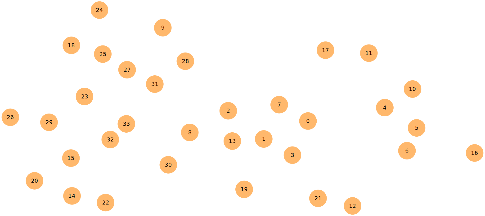
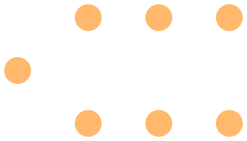
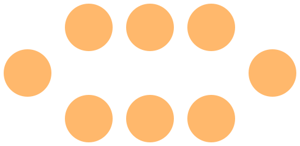
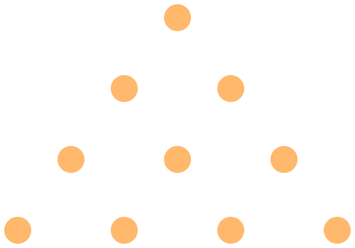
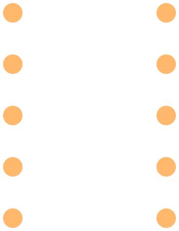
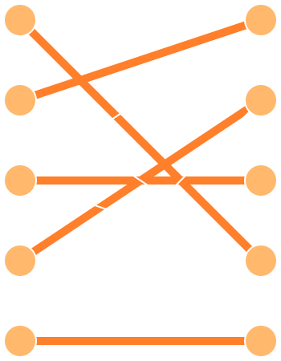

CS3460: Data Structures
Graphs & Connectivity
CS3460: Data Structures & Algorithms
Graphs & Connectivity
Graphs (Networks)
- A graph is a collection of nodes (aka, vertices) and edges. Each edge joins a pair of vertices. Nodes and edges can have weights/costs.
- Graphs can be directed or undirected, referring to whether or not the edges have a direction. By default, "graph" usually means "undirected graph."
- Graphs are very common data structures because they are extremely useful at modeling a wide range of problems and applications.
Graph Examples
Graph Topology
There are many special types of graphs. The following are examples of special cases we might encounter:

Path ($P_n$)

Cycle ($C_n$)
Graph Topology
There are many special types of graphs. The following are examples of special cases we might encounter:

Complete graph ($K_n$)

Planar graph
Graph Topology
There are many special types of graphs. The following are examples of special cases we might encounter:
Bipartite graph (a complete bipartite graph is denoted $K_{m,n}$)
Graph Terminology
- A walk is a series of nodes connected by edges.
- We can think of a walk as a sequence of edges.
- Commonly interested in directed walks in a digraph.
- A path is a "simple" walk (visits no nodes twice).
- A cycle is a path that starts and ends at the same node.
- A connected component is a set of nodes that are joined by paths.
- In a digraph, a strongly connected component is a set of nodes for which all pairs of nodes $i,j$ in that set have a path leading from $i$ to $j$ and from $j$ to $i$.
Some Classical Graph Problems
Shortest Paths
- Problem: Find the shortest path between two nodes in a graph.
- We can also find the shortest path between one node and all other nodes [referred to as single-source shortest path].
- We can also find the shortest path between all pairs of nodes [referred to as all-pairs shortest path].
Minimum Spanning Trees
- Problem: Find a min-cost subset of edges that connects all nodes.
Minimum Spanning Trees
- Problem: Find a min-cost subset of edges that connects all nodes.
Matchings
- Problem: Pair up as many nodes as possible, or pair all nodes at minimum total cost.
Matchings
- Problem: Pair up as many nodes as possible, or pair all nodes at minimum total cost.

Flow / Routing
- Problem: Route a maximum amount of some commodity through a capacitated network, possibly at minimum total cost.
Network Analysis / Data Mining
- Similarity / Connectivity: How similar are nodes $x$ and $y$ if edges connect directly-related elements?
- Clustering: Does a graph break naturally into several large "clusters"?
- Centrality: Find nodes that are well-connected with all other nodes.
Network Analysis / Data Mining
- Similarity / Connectivity: How similar are nodes $x$ and $y$ if edges connect directly-related elements?
- Clustering: Does a graph break naturally into several large "clusters"?
- Centrality: Find nodes that are well-connected with all other nodes.
Graph Representations
An adjacency matrix (ideal for dense graphs)

1 2 3 4
+--------
1 | 0 1 0 0
2 | 0 0 1 0
3 | 1 0 0 1
4 | 0 0 1 0
Graph Representations
An adjacency list (ideal for sparse graphs)

1: 2 3
2: 1 3 4
3: 1 2 4 5
4: 2 3 5
5: 3 4
Unless otherwise stated, we will assume our graphs are represented using adjacency lists.
Simple Connectivity Questions
- Some of the most fundamental graph questions related to connectivity:
- Are nodes $i$ and $j$ connected by some path?
- If so, determine such a path.
- In a digraph, is there a directed path from $i$ to $j$?
- Does a (directed) graph have a (directed) cycle?
- Partition a graph into its connected components.
- Partition a digraph into its strongly connected components.
We can answer all of these questions in $O(n)$ using depth-first search.
Depth-First Search (DFS)
dfs_visit(i):
visited[i] = True
for each j such that (i,j) is an edge:
if visited[j] is False:
predecessor[j] = i
dfs_visit(j)
full_dfs():
for each i: predecessor[i] = null, visited[i] = False
for each i: if visited[i] is False: dfs_visit(i)
- Works in directed and undirected graphs.
- full_dfs() takes $O(m + n)$ — spends $O(1)$ on each node and edge
Depth-First Search (DFS)
- full_dfs() gives us an easy way to partition an undirected graph into its connected components.
- The predecessor pointers define what is called a depth-first search tree.
- To find a path from $i$ to $j$ (if such a path exists):
- Initialize predecessor and visited values for all nodes.
- Call dfs_visit(i).
- Follow predecessor pointers backwards from $j$ to $i$
- How could we use this to find a path between any two nodes with only one call to full_dfs()?
Topological Sorting
- A common type of graph is the Directed Acyclic Graph (DAG).
- As the name implies, this is a digraph that contains no cycles.
- Often used to model systems with precedence constraints.
- Topological sorting is the process of ordering the nodes of a DAG so that all edges point in a consistent direction. You can think of this as "flattening" the DAG into a sequence that satisfies the precedence constraints.
Topological Sorting
- There are several ways to topologically sort in $O(m + n)$ time:
- Find a node with no incoming edges. Add it next to the ordering, remove it from our graph, and repeat.
- If we ever find that every node has an incoming edge, then our graph must contain a cycle (this gives un an alternate way of performing cycle detection).
- Depth-first search gives us another very simple topological sorting algorithm.
Topological Sorting
dfs_visit(i):
visited[i] = True
d[i] = current_time; increment current_time
for each j such that (i,j) is an edge:
if visited[j] is False:
predecessor[j] = i
dfs_visit(j)
f[i] = current_time; increment current_time
- Associate each node with a discovery time and a finishing time.
- To topologically sort a DAG, just perform full_dfs() and then output the nodes in reverse order of finishing times.
- Either output each node as soon as it is "finished," or sort the nodes by their finishing times (in linear time with counting sort) after the fact.
Topological Sorting
- Claim:In a DAG with an edge from node $i$ to node $j$, $f(i) > f(j)$.
- Proof: Consider two cases:
- full_dfs() visits $i$ first.
- full_dfs() visits $j$ first.
- In both cases, we have $f(i) > f(j)$ as long as our graph contains no directed cycles (which it doesn't, since it is a DAG!)